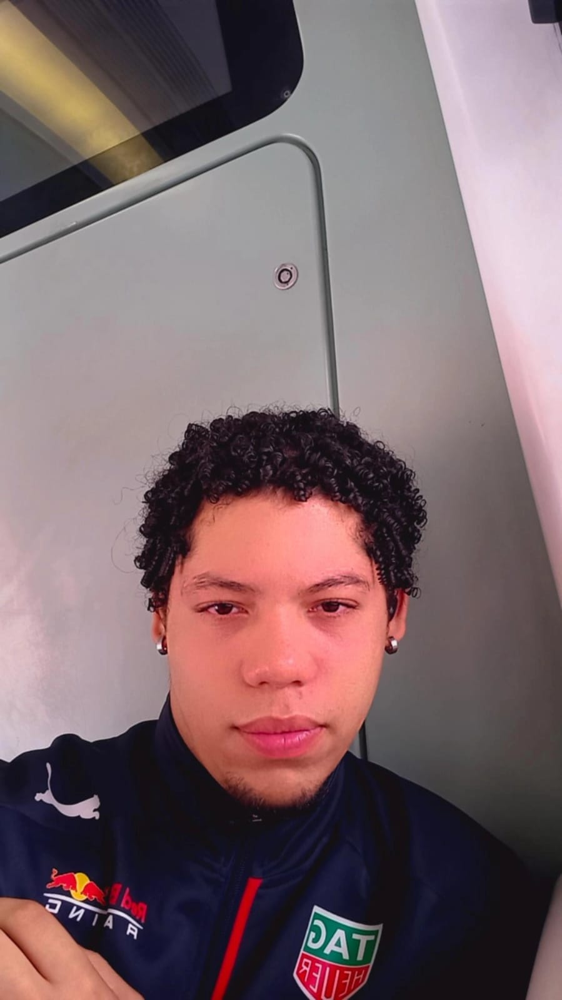

<ion-header [translucent]="true">
  <ion-toolbar>
    <ion-title>
      Avaliação Formadora I
    </ion-title>
  </ion-toolbar>
</ion-header>

<ion-content [fullscreen]="true">
  <ion-header collapse="condense">
    <ion-toolbar>
      <ion-title size="large">Avaliação Formadora I</ion-title>
    </ion-toolbar>
  </ion-header>

  <br>

<div class="card">
  
  <div class="container">
    <h4><b>Anderson Goes</b></h4> 
    <p>Turma: ADS0302M</p>
    <p>Superior em Analise e Desenvolvimento de Sistemas</p>
    <p>Matricula: 23106547</p>

  </div>
</div>
</ion-content>